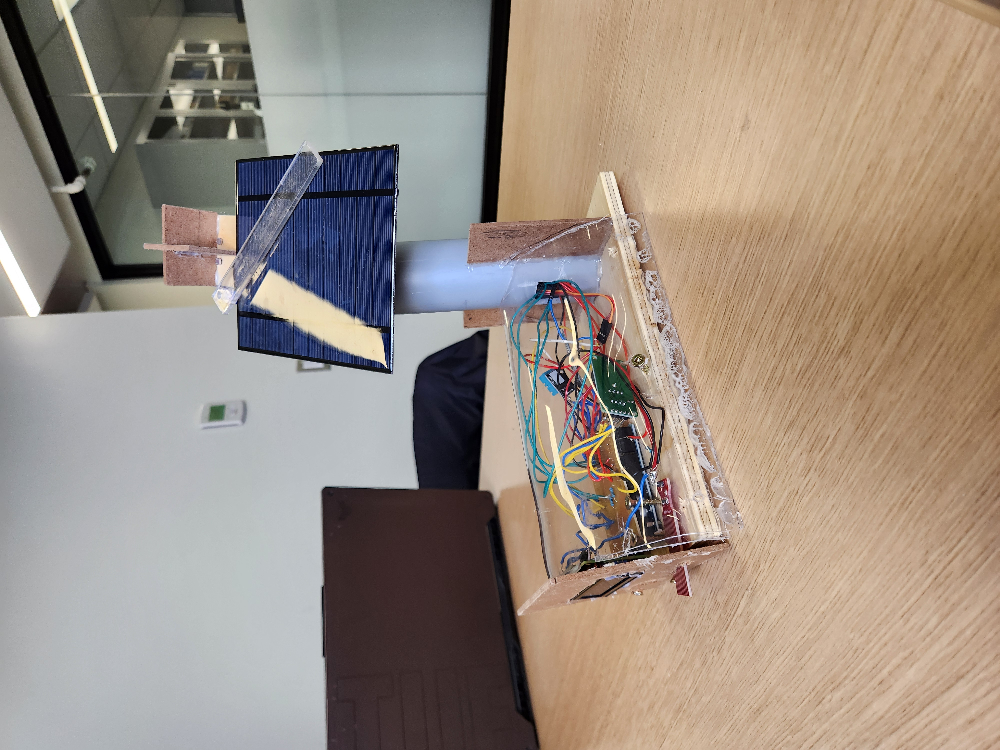
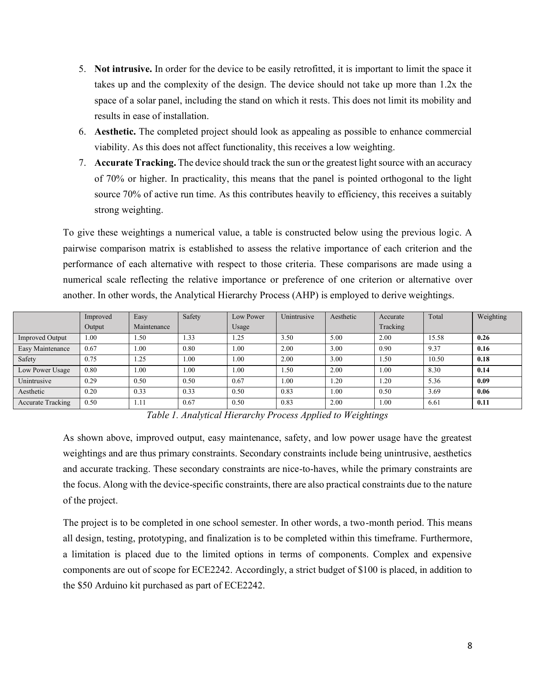
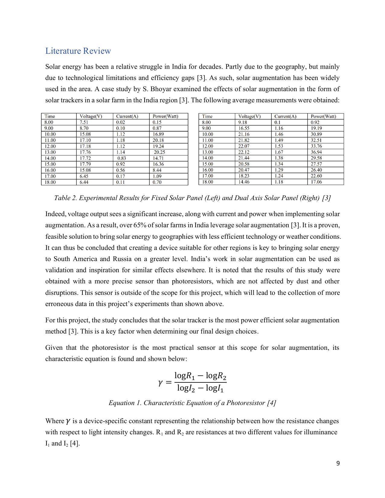
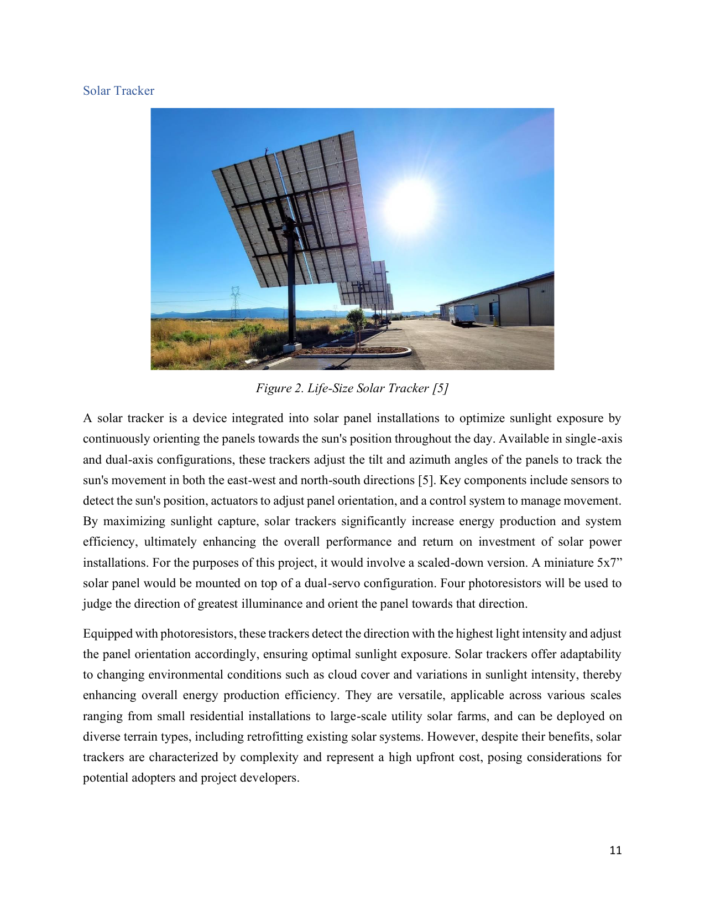
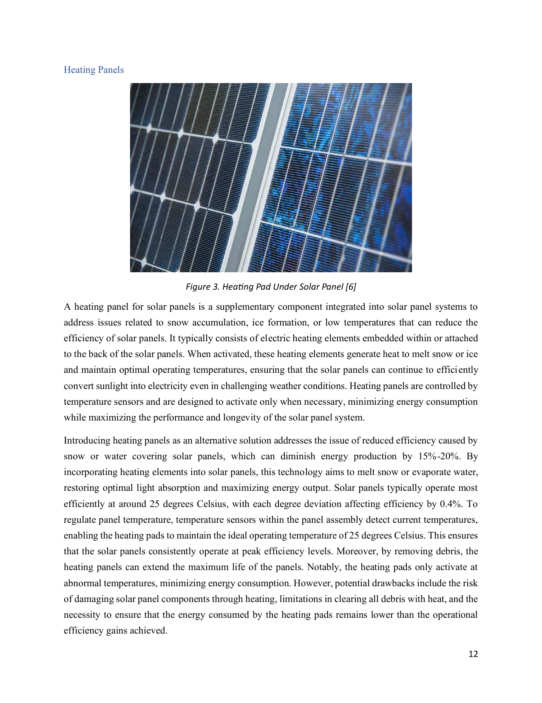
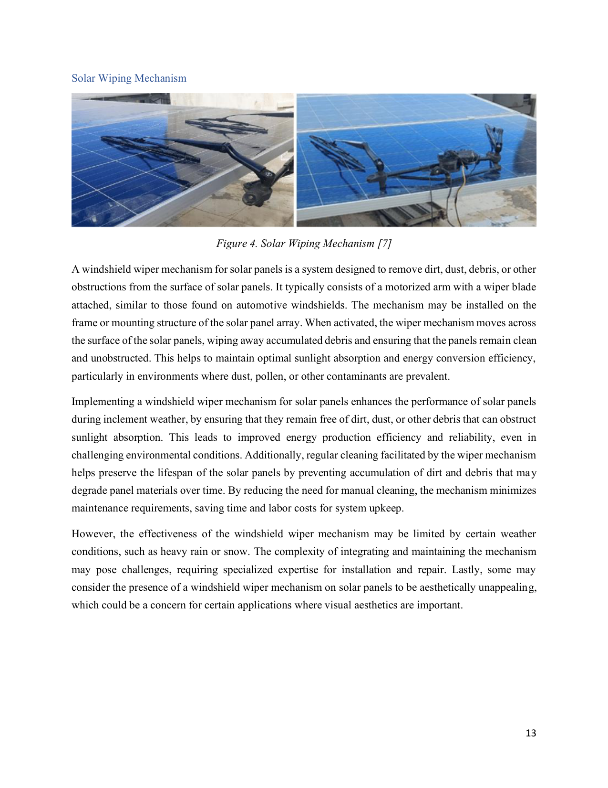
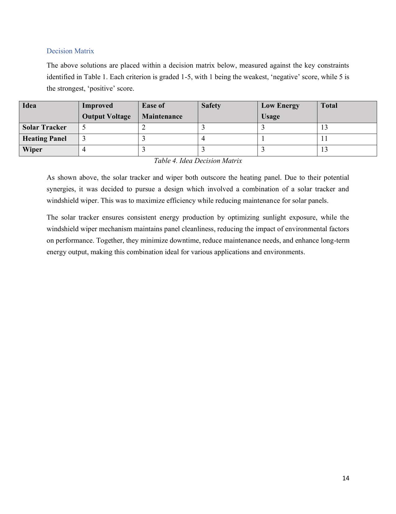
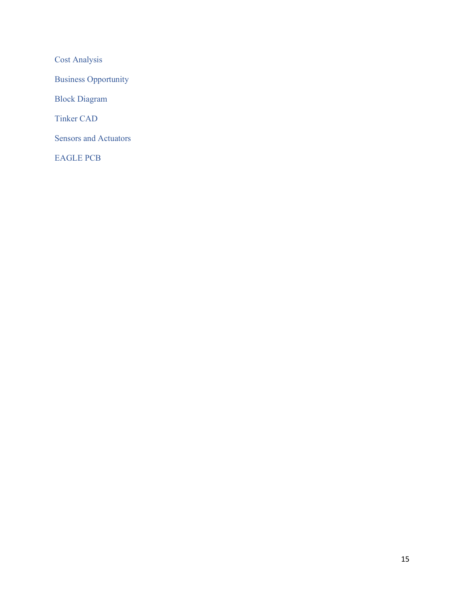

SunSeeker: Self-Maintaining Solar Tracker
An autonomous two-axis photovoltaic tracking platform combined with a self-cleaning windshield wiper mechanism, engineered to boost panel output and reduce maintenance for geographies where traditional fixed solar arrays underperform.
Project Specifications
| Role | Lead Embedded Systems & Hardware Design Engineer |
|---|---|
| Course | ECE 2242: Embedded Systems and Design, Western University |
| Timeline | Spring 2024 (one-semester, two-month academic capstone) |
| Control Platform | Arduino UNO (ATmega328P) with custom Printed Circuit Board |
| Solar Panel | Miniature 5″ x 7″ photovoltaic test panel |
| Actuation | Dual micro servo motors configured for two-axis (azimuth & elevation) tracking plus a windshield wiper cleaning mechanism |
| Sensing | Four directional photoresistors (LDRs) with characteristic-equation-based intensity calibration |
| Performance Target | Improve output voltage by 5 to 10% and reduce panel assembly size to 1.2x panel footprint |
| Budget | Strict $100 component cap plus the $50 ECE 2242 Arduino kit |
| Tools | Autodesk EAGLE, TinkerCAD, Arduino IDE, C++, SolidWorks, PCB fabrication, oscilloscope |
Problem & Objective
Solar panels average only 20% efficiency, and in high-latitude regions, areas with high cloud cover, extreme altitudes, and urban centers, this is not commercially viable. Over 70% of the Earth's land surface is unsuitable for traditional fixed solar energy. The dominant causes are temperature-dependent conductivity loss, suboptimal solar incidence angle at high latitudes, and scattering from cloud cover.
The objective of SunSeeker was to design a solar panel augment device that alleviates these pain points and opens underutilized geographies (notably South America and Russia) to solar energy. The project centers on an Arduino UNO, a miniature solar panel, and a custom PCB that interact with sensors and actuators, validated through a process of customer needs analysis, weighted design selection, prototyping, and experimental testing.
Design Constraints & Prioritization
Seven weighted constraints governed the design. An Analytical Hierarchy Process (AHP) pairwise comparison matrix quantified their relative importance:
| Constraint | Weight |
|---|---|
| Improved Output (5 to 10% voltage gain) | 0.26 |
| Safety | 0.18 |
| Easy Maintenance | 0.16 |
| Low Power Usage (moving parts active under 30% of runtime) | 0.14 |
| Accurate Tracking (≥70% orthogonal alignment) | 0.11 |
| Not Intrusive (≤1.2x panel footprint) | 0.09 |
| Aesthetic | 0.06 |
Improved output, easy maintenance, safety, and low power usage emerged as primary constraints, while aesthetics and accurate tracking were secondary. A strict one-semester timeline and a $100 budget bounded the design space.
Design Ideation & Final Selection
Initial ideation produced six candidate concepts: solar tracker, solar wiping mechanism, solar panel heating, hybrid designs, light concentration, and flexible panels. The top three were scored against the weighted constraints on a 1 to 5 scale:
| Idea | Output | Maintenance | Safety | Low Energy | Total |
|---|---|---|---|---|---|
| Solar Tracker | 5 | 2 | 3 | 3 | 13 |
| Heating Panel | 3 | 3 | 4 | 1 | 11 |
| Wiper Mechanism | 4 | 3 | 3 | 3 | 13 |
The solar tracker and wiper tied for first. Given their strong synergies, the final design pursued a hybrid combining dual-axis solar tracking with an automated windshield wiper mechanism, maximizing efficiency while reducing maintenance for solar panels across diverse environments.
System Architecture & Control Design
Sensing & Photoresistor Calibration
Four directional photoresistors (LDRs) form the light-detection front end. Each LDR changes resistance with incident photon count, and the panel is oriented toward the direction of greatest illuminance. The characteristic equation relating resistance to light intensity was derived to enable accurate differential illumination measurements:
log I = (log R1 - log R2) / (log R2 - log R1)
where R1 and R2 are resistance values at two illuminance levels I1 and I2. This calibration data drove ambiguity-free thresholding between adjacent sensor quadrants before actuating the servos.
Embedded Firmware & Actuation
Developed in C++ within the Arduino IDE on the ATmega328P, the firmware runs a continuous sensing-to-actuation loop:
- ADC Acquisition: Samples all four LDR voltage dividers through the onboard analog-to-digital converter.
- Differential Error & Hysteresis: Computes proportional error between opposing sensor pairs and applies hysteresis thresholds to prevent servo hunting near equilibrium illumination.
- Two-Axis Servo Drive: Updates pulse-width-modulated position commands to the azimuth and elevation servos, maintaining the panel orthogonal to the strongest light source.
- Wiper Coordination: Interfaces with the windshield wiper mechanism to remove debris, snow, and water on schedule, keeping the panel surface clear for maximum absorption.
PCB Design & Integration
The control electronics were laid out in Autodesk EAGLE as a custom printed circuit board, integrating the Arduino system, LDR sensor conditioning, servo motor drive circuitry, and the wiper motor interface. TinkerCAD was used for mechanical prototyping of the gimbal and wiper geometry before final assembly on the 5″ x 7″ panel.
The PCB kept the sensor inputs and low-level control signals separate from the servo and wiper power paths. This made the board the interface between the four voltage-divider sensors, the ATmega328P analog inputs, and the actuator supply rather than relying on loose point-to-point wiring. The mechanical model and PCB were checked against the 1.2 times panel-footprint constraint before assembly.
Tracking Logic and Maintenance Cycle
Opposing LDR readings were treated as two error signals: left versus right for azimuth and top versus bottom for elevation. The servos moved only when the difference exceeded a calibrated threshold, which prevented continuous hunting when the four sensors saw nearly equal illumination. The wiper was treated as a separate scheduled action so cleaning did not continuously consume actuator power during normal tracking.
Testing & Validation
Bench testing validated the design against the weighted constraints and the 5 to 10% output-improvement goal. The dual-axis tracking configuration demonstrated significant increases in voltage, current, and power output relative to a fixed panel baseline, aligning with the >65% adoption rate of solar augmentation observed across solar farms in India. The self-cleaning wiper reduced accumulated debris and improved light absorption during simulated inclement conditions.
Power budget analysis confirmed that moving parts stayed within the 30% active-runtime requirement, preserving the net energy gain that makes tracking economically viable.
Project Figures & Schematics
Extracted from the ECE 2242 final project report. Click any image to enlarge.









References
- Parthiban & Ponnambalam (2022), "An enhancement of the Solar Panel Efficiency: A comprehensive review," Frontiers in Energy Research.
- Maka & Alabid (2022), "Solar Energy Technology and its roles in Sustainable Development," Oxford Academic.
- Bhoyar, "Dual-Axis Solar Tracker, A Case Study," IOSR Journal of Engineering.
- ScienceDirect Topics, "Photoresistors: an overview."